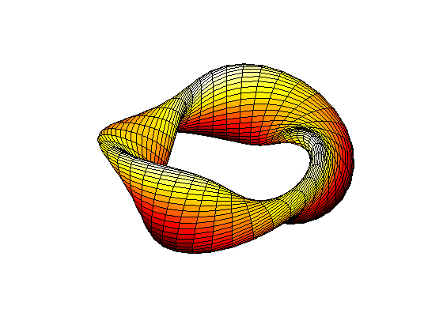

Cruller
Construct a cruller by revolving the eccentric ellipse defined by the function XYCRULL.
Thanks to C. Henry Edwards, Dept. of Mathematics, University of Georgia, 6/20/93.
ab = [0 2*pi];
rtr = [8 1.5 1];
pq = [40 40];
box = [-10 10 -10 10 -3 3];
vue = [90 50];
clf
tube('xycrull',ab,rtr,pq,box,vue)
colormap(hot);
view(-37.5,65);
